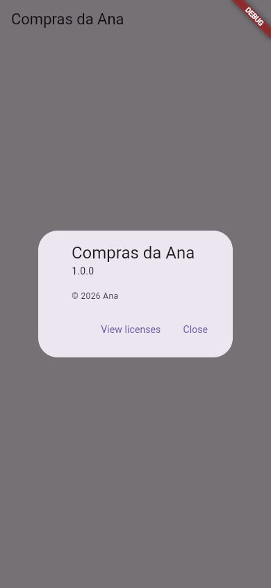

Flutter Publicando nas Lojas
O app de compras da Ana está pronto, testado e empacotado (Gerando o APK e o App Bundle). Agora ela quer que qualquer pessoa ache o app na Google Play e, quem sabe um dia, na App Store do iPhone. Publicar não é programar: é preencher formulários, preparar imagens, responder perguntas sobre privacidade e esperar a loja revisar. Esta aula mostra o caminho inteiro, em ordem, para você saber o que esperar antes de começar.
- O que preparar antes: conta de desenvolvedor, nome, ícone, capturas de tela, textos e política de privacidade.
- O caminho na Google Play: Play Console, ficha da loja, questionários, envio do
.aab, faixas de teste e produção. - A exigência de teste fechado para contas pessoais novas (12 testadores, 14 dias).
- O caminho na App Store: App Store Connect,
flutter build ipa, TestFlight e revisão. - Como mandar atualizações.
Publicar exige contas pagas e telas que mudam com frequência. Os passos seguem a documentação oficial do Flutter (Android, iOS) e as páginas de ajuda das lojas em outubro de 2026. Nomes de botões, preços e regras mudam: confira nas lojas antes de pagar qualquer coisa. Só a foto do app (o diálogo "Sobre") veio do lab.
A ideia: abrir uma barraca na feira
Para vender na feira, não basta ter o produto. A Ana precisa se cadastrar na prefeitura (a conta de desenvolvedor), fazer uma placa bonita com nome e fotos (a ficha da loja), mostrar que segue as regras (os questionários de conteúdo e privacidade) e passar pela fiscalização (a revisão). Só então a barraca abre. E, se ela mudar a receita, a nova versão também passa pela fiscalização.
1. Antes de tudo: o que preparar
| Item | Para quê | Dica |
|---|---|---|
| Conta de desenvolvedor | Publicar | Google Play: taxa única. Apple Developer Program: anuidade. Confira os valores atuais nos sites das lojas. |
| Nome do app | Aparece na loja | Curto e procurável: "Compras da Ana: lista de mercado". |
| Ícone | Loja e tela do celular | A Play pede 512 × 512 pixels (PNG). Faça um desenho simples, que funcione pequeno. |
| Capturas de tela | Mostrar o app | Rode o app e capture as telas principais (sem a faixa DEBUG: debugShowCheckedModeBanner: false ou modo release). |
| Descrição | Convencer a pessoa | Na Play: uma curta (até 80 caracteres) e uma completa (até 4000). |
| Política de privacidade | Exigida pelas lojas | Uma página na web dizendo que dados o app coleta (mesmo que seja "nenhum"). |
| App Bundle assinado | O app em si | flutter build appbundle com a sua chave (veja Gerando o APK). |
Um detalhe que o usuário vê: a tela "Sobre" do app com nome e versão. O Flutter tem uma pronta, o showAboutDialog, que ainda lista as licenças dos pacotes usados (as lojas e as licenças de código aberto pedem esse crédito):
import 'package:flutter/material.dart';
void main() => runApp(const MaterialApp(home: TelaInicial()));
class TelaInicial extends StatelessWidget {
const TelaInicial({super.key});
@override
Widget build(BuildContext context) {
return Scaffold(
appBar: AppBar(title: const Text('Compras da Ana')),
body: Center(
child: FilledButton(
onPressed: () => showAboutDialog(
context: context,
applicationName: 'Compras da Ana',
applicationVersion: '1.0.0',
applicationLegalese: '© 2026 Ana',
),
child: const Text('Sobre o app'),
),
),
);
}
}
- showAboutDialog(context: context, …)
- Abre o diálogo "Sobre" padrão do Material (veja Diálogos).
- applicationName / applicationVersion
- O nome e a versão mostrados. Use a mesma versão do
pubspec.yaml. - applicationLegalese
- Um texto legal curto: direitos autorais, por exemplo.

Os botões saíram em inglês porque o app não configurou outro idioma. Para eles aparecerem em português ("Ver licenças", "Fechar"), o app precisa das traduções do Flutter (o pacote flutter_localizations e a lista localizationsDelegates do MaterialApp), um passo que vale fazer antes de publicar um app em português.
Missão: a Ana vai publicar uma correção. Troque a versão do diálogo para 1.0.1, rode e toque em "Sobre o app" para conferir.
import 'package:flutter/material.dart';
void main() => runApp(const MaterialApp(home: TelaInicial()));
class TelaInicial extends StatelessWidget {
const TelaInicial({super.key});
@override
Widget build(BuildContext context) {
return Scaffold(
appBar: AppBar(title: const Text('Compras da Ana')),
body: Center(
child: FilledButton(
onPressed: () => showAboutDialog(
context: context,
applicationName: 'Compras da Ana',
applicationVersion: '1.0.0',
applicationLegalese: '© 2026 Ana',
),
child: const Text('Sobre o app'),
),
),
);
}
}
import 'package:flutter/material.dart';
void main() => runApp(const MaterialApp(home: TelaInicial()));
class TelaInicial extends StatelessWidget {
const TelaInicial({super.key});
@override
Widget build(BuildContext context) {
return Scaffold(
appBar: AppBar(title: const Text('Compras da Ana')),
body: Center(
child: FilledButton(
onPressed: () => showAboutDialog(
context: context,
applicationName: 'Compras da Ana',
applicationVersion: '1.0.1',
applicationLegalese: '© 2026 Ana',
),
child: const Text('Sobre o app'),
),
),
);
}
}
2. Google Play, passo a passo
- Crie a conta no Google Play Console (play.google.com/console), pague a taxa e confirme a sua identidade (a Google pede documento).
- Crie o app: botão Criar app; informe o nome, o idioma padrão (Português – Brasil), se é app ou jogo e se é gratuito ou pago. Gratuito não pode virar pago depois.
- Configure o app (o Console mostra uma lista de tarefas): política de privacidade, acesso ao app (se precisa de login, dê uma conta de teste aos revisores), anúncios (o app tem?), classificação do conteúdo (um questionário que gera a faixa etária), público-alvo, e a segurança dos dados (Data safety: que dados o app coleta e por quê).
- Monte a ficha da loja: descrições, ícone, imagem de destaque e capturas de tela.
- Envie o
.aabnuma faixa de teste (próximo item). Na primeira vez, o Console oferece o Play App Signing: a Google guarda a chave final do app, e a sua chave vira só a chave de envio (se você a perder, dá para pedir a troca). - Teste, e depois promova a versão para produção. A Google revisa; costuma levar de algumas horas a alguns dias.
As faixas de teste
| Faixa | Quem recebe | Para quê |
|---|---|---|
| Teste interno | Até 100 pessoas que você convida por e-mail | A família e os amigos: rápido, quase sem revisão |
| Teste fechado | Grupos que você escolhe | Testar com mais gente antes de lançar |
| Teste aberto | Qualquer um que entrar no programa pela loja | Um "beta" público |
| Produção | Todo mundo | O lançamento |
Segundo a ajuda do Play Console, contas de desenvolvedor pessoais criadas depois de 13 de novembro de 2023 precisam fazer um teste fechado antes de pedir acesso à produção, com no mínimo 12 testadores inscritos continuamente por pelo menos 14 dias (dias seguidos: quem sai e volta recomeça a contagem). Planeje: chame os testadores antes de enviar a primeira versão.
3. App Store (iPhone), passo a passo
Tudo aqui exige um Mac com Xcode (veja iOS, Web e Desktop).
- Entre no Apple Developer Program (developer.apple.com) e pague a anuidade.
- Registre o identificador (Bundle ID, como
br.com.anasilva.compras) e crie o app no App Store Connect (appstoreconnect.apple.com). - Ajuste o projeto no Xcode (
ios/Runner.xcworkspace): nome, Bundle ID, equipe de assinatura, ícone. - Gere o pacote:
flutter build ipacria o arquivo embuild/ios/ipa/. - Envie com o app Transporter da Apple ou pelo próprio Xcode.
- Teste com o TestFlight: o app de testes da Apple. Você convida pessoas por e-mail e elas instalam pelo TestFlight.
- Preencha a ficha (descrição, capturas nos tamanhos de tela pedidos, privacidade) e mande para revisão. A Apple costuma ser mais rigorosa que a Google: apps "vazios" ou que parecem só um site costumam ser recusados.
4. Atualizações
Para mandar uma versão nova:
- Aumente a versão no
pubspec.yaml: de1.0.0+1para1.0.1+2. O número depois do+sempre tem de subir. - Gere de novo (
flutter build appbundle/flutter build ipa), com a mesma chave. - Envie na faixa de teste, teste e promova para produção. Escreva as notas da versão ("O que há de novo").
5. Qual loja primeiro?
Para quem está começando, a Google Play: funciona a partir de qualquer computador, a taxa é única e o teste interno deixa você mostrar o app aos amigos em poucas horas. A App Store faz sentido quando você tiver um Mac e o app estiver redondo.
Quando dá errado
O Console recusa o .aab porque o versionCode (o número depois do +) é igual ao de uma versão já enviada. Como resolver: aumente-o no pubspec.yaml e gere de novo.
Você enviou um .aab assinado com a chave de debug (o padrão do flutter create). Como resolver: configure a sua chave no build.gradle.kts (aula Gerando o APK, seção Assinatura).
Conta pessoal nova sem o teste fechado completo (12 testadores, 14 dias seguidos), ou tarefas da lista de configuração pendentes. Como resolver: abra o painel do app no Console: ele mostra exatamente o que falta.
As lojas mandam o motivo por e-mail e no painel, citando a regra. Os mais comuns: política de privacidade ausente ou que não bate com o formulário de dados, permissão pedida sem uso claro (câmera, localização), conteúdo enganoso na ficha. Como resolver: corrija o ponto citado, envie uma versão nova (com versionCode maior) ou responda pelo painel.
Referência
| Etapa | Google Play | App Store |
|---|---|---|
| Painel | Play Console | App Store Connect |
| Arquivo | .aab (flutter build appbundle) | .ipa (flutter build ipa, no Mac) |
| Teste com amigos | Teste interno | TestFlight |
| Identificador | applicationId | Bundle ID |
| Versão | versionName + versionCode | Version + Build |
| Ambos vêm de | version: 1.0.1+2 no pubspec.yaml | |
Exercícios
1. O arquivo da Play Store
Qual extensão de arquivo você envia para a Google Play?
2. Quantos testadores?
Uma conta pessoal nova precisa de quantos testadores no teste fechado?
3. A Ana enviou a versão 1.0.0+1 e agora quer mandar uma correção. Qual version funciona?
4. Como se chama o app da Apple para testar versões antes de publicar?
5. A Ana marcou o app como gratuito. Depois de publicado, ela pode passar a cobrar pelo download?
Resumo
- Publicar = conta de desenvolvedor + ficha da loja + questionários (conteúdo, público, dados) + o pacote assinado + revisão.
- Google Play: Play Console,
.aab, faixas de teste interno/fechado/aberto e produção; contas pessoais novas precisam de teste fechado com 12 testadores por 14 dias. - App Store: Mac, App Store Connect,
flutter build ipa, TestFlight e uma revisão mais rigorosa. - Cada atualização aumenta o número depois do
+nopubspec.yaml.